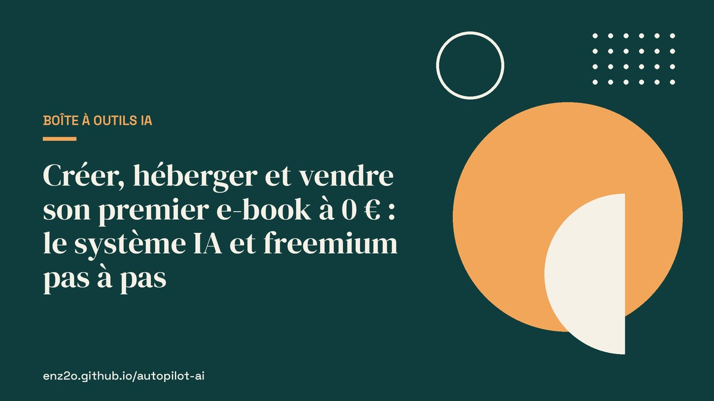

Créer, héberger et vendre son premier e-book à 0 € : le système IA et freemium pas à pas
2026-11-21
Article contenant des liens affiliés.

Que vous soyez freelance en quête de crédibilité, étudiant souhaitant valider des compétences clés, ou créateur de contenu désireux de monétiser votre audience, la création d'un e-book ou d'un guide pratique reste l'un des leviers les plus puissants. Cet actif numérique permet d'asseoir une expertise, de capturer des adresses e-mails qualifiées ou de générer vos premiers revenus passifs.
Pendant longtemps, concevoir et commercialiser un livre numérique exigeait soit un budget conséquent pour déléguer le graphisme et la technique, soit des dizaines d'heures de travail fastidieux. Aujourd'hui, en combinant la puissance de l'intelligence artificielle avec des logiciels freemium bien choisis, il est possible de créer un produit fini professionnel à 0 € de coût de départ.
Voici le guide pas à pas pour passer d'une simple idée à vos premières ventes sans dépenser un centime.
Étape 1 : Structurer un plan percutant grâce à l'IA
Le piège classique consiste à ouvrir un document vierge et à rédiger au fil de la pensée. Pour produire un e-book à forte valeur ajoutée, votre contenu doit répondre à un problème précis rencontré par votre cible.
Valider et affiner l'idée
Commencez par utiliser une IA générative (comme ChatGPT, Claude ou Gemini) pour analyser les attentes de votre audience. Soumettez-lui vos idées brutes et demandez-lui de déceler les angles les plus vendeurs.
Exemple de prompt à adapter :
« Je souhaite rédiger un guide pratique destiné aux [votre cible, ex: freelances débutants]. Mon objectif est de les aider à [problème résolu, ex: organiser leur prospection]. Quelles sont les 5 questions les plus fréquentes ou les blocages majeurs sur ce sujet ? »
Construire un sommaire logique
Une fois le sujet verrouillé, demandez à l'IA de vous proposer une structure détaillée par chapitres et sous-sections. N'hésitez pas à corriger le tir : l'IA apporte l'ossature, mais c'est vous qui validez la pertinence stratégique.
- Conseil d'expert : Assurez-vous que chaque chapitre apporte une solution concrète et immédiatement applicable (listes à puces, modèles, étapes pas à pas).
Étape 2 : Rédiger et affiner le contenu sans effet « robot »
L'intelligence artificielle doit être perçue comme un assistant de rédaction hyper-efficace, et non comme un auteur autonome. Un e-book rédigé à 100 % par une IA manque de personnalité, souffre de répétitions et risque de décevoir vos lecteurs.
La méthode de rédaction itérative
Ne demandez jamais à l'IA de « rédiger un livre de 30 pages ». Procédez sous-section par sous-section : 1. Fournissez à l'outil votre plan de section, vos idées clés et des exemples personnels. 2. Demandez-lui d'en faire une première mouture fluide. 3. Reprenez le texte généré pour y insuffler votre style, ajouter des anecdotes vécues et vérifier la rigueur des informations.
Les outils gratuits à privilégier
- Claude ou ChatGPT (versions gratuites) : Idéaux pour la formulation, la synthétisation et l'enrichissement du vocabulaire.
- LanguageTool ou Grammarly : Indispensables en version freemium pour traquer les coquilles, fautes d'accord et lourdeurs de style avant la publication.
Étape 3 : Designer un document sobre et professionnel
La forme compte tout autant que le fond. Un e-book mal mis en page donne une impression d'amateurisme, même si son contenu est brillant. Heureusement, il n'est pas nécessaire d'être graphiste ni d'acheter des logiciels coûteux.
Les meilleures solutions de mise en page gratuites
- Canva (Offre Freemium) : Propose des centaines de modèles d'e-books gratuits et très bien conçus. Il vous suffit d'importer votre texte, d'adapter la typographie à votre charte graphique et d'insérer des images d'illustration libres de droits (disponibles directement dans l'outil ou via Unsplash/Pexels).
- Google Docs ou LibreOffice Writer : Si vous préférez un format plus sobre et éditorial, configurez des styles de titres propres, ajoutez des en-têtes/pieds de page, puis exportez directement le tout en PDF de haute qualité.
Trois règles d'or visuelles
- Aérez le texte : Privilégiez des paragraphes courts, des listes à puces et des encadrés pour les conseils clés.
- Limitez les polices : Deux typographies suffisent (une pour les titres, une pour le corps de texte).
- Conservez des marges généreuses : Un document aéré est beaucoup plus agréable à lire sur tablette, smartphone ou écran d'ordinateur.
Étape 4 : Héberger, distribuer et vendre à 0 €
C'est généralement à cette étape que la majorité des créateurs et freelances bloquent : comment délivrer le PDF automatiquement après paiement ou capture d'e-mail sans souscrire à trois abonnements différents ?
C'est ici qu'interviennent les plateformes tout-en-un freemium. Elles permettent de centraliser le site d'atterrissage, le système de paiement et l'envoi du document sans aucuns frais fixes au démarrage.
Pour mettre en place cette infrastructure sans dépenser un centime, Systeme.io constitue une solution idéale. Son offre gratuite inclut l'hébergement de votre page de vente, la gestion de votre liste e-mail et l'envoi automatique du fichier dès la validation de la commande.
Le workflow de distribution automatique
- Créez une page de capture ou de vente : Utilisez les modèles intégrés pour présenter votre e-book, ses bénéfices et ajouter un formulaire de commande.
- Configurez l'automatisation : Programmez un e-mail automatique contenant le lien de téléchargement direct de votre fichier PDF dès que l'utilisateur s'inscrit ou paie.
- Fixez votre prix : Proposez votre guide soit gratuitement en échange d'un e-mail (pour développer votre audience), soit à un prix d'entrée accessible (par exemple entre 7 € et 19 €).
En centralisant tout sur une seule plateforme comme Systeme.io, vous évitez la complexité technique liée au bricolage de plusieurs plugins et conservez une expérience fluide pour votre lecteur.
Étape 5 : Aménager un environnement de travail ergonomique
Rédiger et structurer un ouvrage complet demande plusieurs sessions de concentration prolongées. Travailler dans une posture inconfortable peut rapidement nuire à votre motivation et votre productivité.
Pour conserver une posture saine devant votre écran pendant la phase de rédaction, pensez à rehausser votre matériel avec un support ordinateur portable ergonomique. Cela permet de maintenir le regard à hauteur des yeux et d'éviter les douleurs cervicales.
De même, l'utilisation d'une souris ergonomique sans fil réduit la fatigue musculaire du poignet et de l'avant-bras lors des longues phases d'édition et de mise en page sur Canva.
Étape 6 : Promouvoir son e-book grâce à la réutilisation de contenu
Une fois votre e-book en ligne et prêt à être téléchargé, votre travail n'est pas terminé : il faut désormais le faire connaître. Plutôt que de repartir de zéro pour votre communication, appuyez-vous à nouveau sur l'IA pour dériver des micro-contenus à partir de votre ouvrage.
La méthode du recyclage express
- Extraire 3 idées clés : Demandez à votre outil d'IA de résumer le chapitre 1 sous forme de carrousel LinkedIn ou de thread Twitter/X.
- Rédiger des posts d'accroche : Générez de brèves publications soulevant le problème exact traité dans votre e-book, puis renvoyez vers votre page d'atterrissage en commentaire.
- Créer une séquence e-mail d'accompagnement : Planifiez une série de 3 e-mails d'accueil automatisés pour continuer d'apporter de la valeur à vos nouveaux inscrits et leur présenter vos services payants ou vos autres produits.
En résumé : Votre plan d'action immédiat
Vous n'avez pas besoin d'un budget marketing ni d'une équipe pour lancer un produit numérique rentable. Voici la feuille de route à suivre :
- Identifiez la douleur principale de votre cible et validez le plan de votre e-book avec une IA gratuite.
- Rédigez le contenu par étapes en apportant votre touche et votre expertise propre.
- Assemblez le document sur un outil freemium comme Canva pour obtenir un rendu net et moderne.
- Mettez en place la livraison automatique de votre fichier via Systeme.io afin d'encaisser vos premiers euros ou de capturer des prospects qualifiés.
- Recyclez les chapitres en publications sur vos réseaux sociaux pour générer du trafic continu vers votre offre.
Bloquez un créneau de quelques heures ce week-end : votre premier actif numérique est désormais à portée de main !